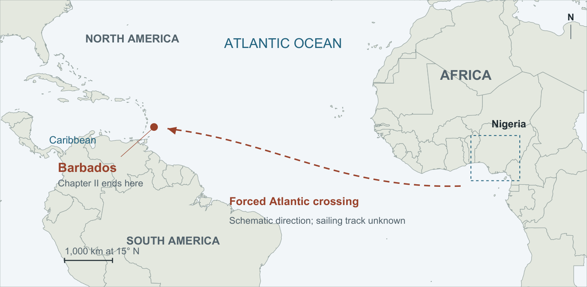
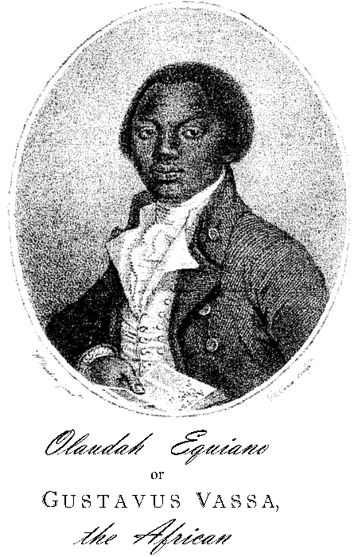
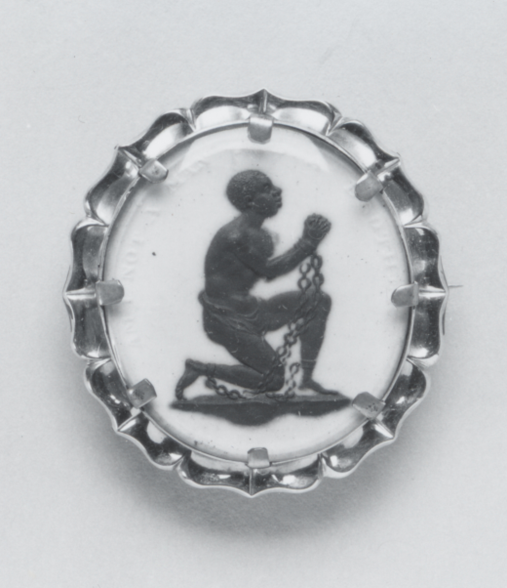
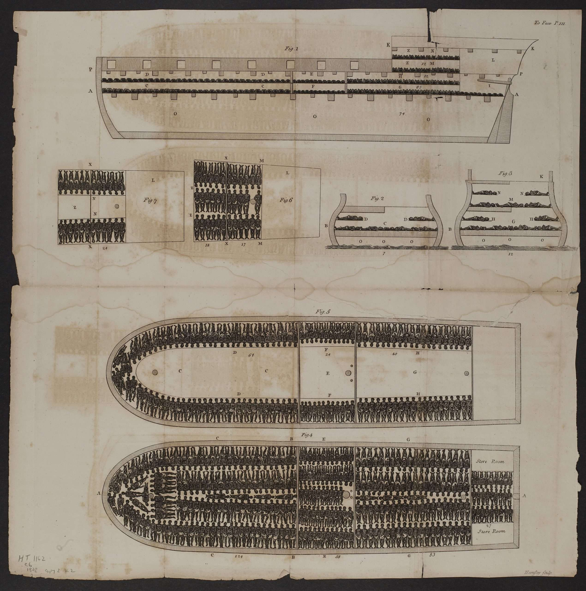

Equiano · Chapters 1–2
Community, captivity, and the Atlantic crossing in Equiano’s account. Read the narrated journey alongside the evidence and the continuing dispute about his early life.
The geography of the account
Download all three mapsThese maps locate the journey described in chapters 1–2. The African childhood and crossing are disputed as autobiography. Present-day borders provide orientation; the dashed line shows direction, not a known sailing track.

Schematic movement Named arrival Geographic context
North is up. Coastlines and rivers: Natural Earth, public domain. Coordinates and source notes. Zoom with the + / − controls.
Place names and geographic limits
- Guinea
- A broad historical coastal term in chapter 1, extending from Senegal toward Angola. It does not mean only today’s Republic of Guinea.
- Benen / Benin
- The historical kingdom centered on Benin City in present-day Nigeria. The neighboring Republic of Benin is a different modern state. Benin City is context, not a narrated journey stop.
- Eboe and Essaka
- The narrative’s people/region and home settlement. Lovejoy proposes Usaka in the Ikwuano area; that identification remains contested. No exact village is pinned.
- Tinmah
- A town named in chapter 2. The account does not supply coordinates. Its possible modern identification is a scholarly reconstruction.
- The large river and embarkation port
- Both are unnamed. The Niger and Benue on the regional map provide orientation; the map does not identify either as the river he describes.
- Barbadoes / Bridge Town
- Barbados and Bridgetown. The city marker locates the town, not a particular anchorage or sale yard.
Scope: the narrative’s geographic framework and movement. Incidental comparison places are not all plotted. Chapter 1 · Chapter 2.
Chapter 1 · Community and authority
The chapter establishes a social world before chapter 2 describes its disruption. Its African childhood is presented as personal memory; that autobiographical claim remains disputed. The analysis here concerns what the narrative presents and how it addresses its readers.
A deliberate beginning
The opening anticipates readers who distrust extraordinary stories but dismiss ordinary ones. Equiano introduces himself as “neither a saint, a hero, nor a tyrant.” His modesty accompanies a claim to public attention: his life can serve the interests of humanity. He also measures his suffering against that of other Africans, describing himself as unusually fortunate.
People before captivity
Marriage, music, weaving, farming, houses, markets, government, and religion fill the account. People appear as parents, judges, makers, and musicians. The mother appears at markets, religious observances, and a battle. These descriptions give family separation specific meaning in the next chapter: captivity removes people from relationships, knowledge, and responsibilities.
A particular social position
The family described here is prominent and owns enslaved people. The father is an elder; the parents intend their son to receive the same mark of distinction. Marriage involves unequal obligations and the language of property. Praise of the community therefore coexists with hierarchy, punishment, warfare, and enslavement. The account does not represent a socially neutral view of all African life.
Slavery and the limits of comparison
Equiano contrasts the treatment of enslaved people in this community with slavery in the West Indies. Similar food, clothing, and work do not remove ownership or the possibility of sale. The restriction on eating with freeborn people becomes personally painful in chapter 2. His suggestion that traders encouraged warfare begins with “Perhaps”: the word marks an inference. The kidnapping judgment earlier in the chapter describes one reported case, not a complete legal code.
Description already makes an argument
Comparisons with Europe occur throughout. Equiano treats beauty as relative to the observer and presents African labor, skill, and institutions as evidence against contempt. The closing argument attributes apparent differences in ability to language, education, circumstances, and slavery itself. Its appeal to shared creation gives Christian readers grounds to reject racial inferiority. Read chapter 1.
Chapter 2 · Capture, sale, and separation
The chapter’s sequence repeatedly offers a possibility of security or belonging, then removes it. The Atlantic crossing follows a substantial account of captivity within Africa.
Capture and the sister
In the account, the child first helps prevent another kidnapping by raising an alarm. Later, two men and a woman seize him and his sister while the adults are away. The children are separated, unexpectedly reunited, and separated again. The adult narrator then addresses his sister directly. Her fate remains unknown: the dangers he imagines express continuing anxiety, not verified events in her life.
Affection does not confer freedom
At a smith’s house, comfort and companionship coexist with exclusion from the freeborn children’s meals. At Tinmah, a wealthy widow’s son lets him eat first because he is older. Familiar language, play, and care encourage the hope of adoption. Yet he is taken away without warning. The change exposes a distinction among kind treatment, belonging, legal status, and the power to choose where to live.
Different African societies
Languages, religious practices, food preparation, bodily markings, and forms of travel change along the narrated journey. Equiano evaluates these differences through the customs he attributes to home. His judgments disclose his own standards as well as the practices he describes. Africa appears as a set of varied communities, rather than one uniform place.
Knowledge at the coast
The narrative reports six or seven months between kidnapping and arrival at the coast. The ship, white crew, and unfamiliar instruments initially produce terror. Other captives explain what they can. The telling distinguishes the child’s limited understanding from the narrator’s later vocabulary. Fear of being eaten belongs to that representation of uncertainty; it does not establish that the crew practiced cannibalism.
The hold and the trade
Heat, foul air, waste, hunger, chains, and crowding explain bodily suffering through the ship’s conditions. Equiano connects preventable deaths to purchasers’ avarice. He also distinguishes his position from that of many others: the account says his youth spared him fetters and his illness kept him largely on deck. His treatment cannot stand for every captive’s experience. Read chapter 2.
Barbados and another separation
The sale scene separates relatives and friends, including brothers. The address to “nominal Christians” turns the reader’s professed moral standard against the buyers’ conduct. “Nominal” means Christian in name. The chapter ends with this accusation. The opening of chapter 3 clarifies that Equiano himself was among those not sold in Barbados and was sent onward to Virginia. Chapter 3, opening.
Water in the two chapters
Chapter 1 places water within daily and religious life: brooks and springs, washing before meals, and purification. Dried fish arrive through trade and are valued as a rarity. In chapter 2, fetching spring water provides an opportunity to seek directions home. Tinmah has rivulets and a communal pond; later, a large unnamed river carries canoes and households.
The sea changes the scale of movement and the captives’ ability to control it. It also has several meanings within the shipboard account. Equiano envies the liberty of sea creatures; flying fish cause wonder; crew members throw surplus fish overboard while hungry captives beg for food. Water supports life and movement while the ship’s owners determine access, destination, and confinement. These contrasts make control over water’s uses as significant as water’s physical size. Chapter 2.
Publication, faith, and Genesis
Published in 1789, the book addresses an audience with political power. Its dedication names both houses of the British Parliament. The narrative combines personal testimony, descriptions of societies, travel, and religious argument. Conventional expressions of humility can demonstrate literary knowledge while also acknowledging unequal power. Title page and dedication.
The subscribers pledged to buy the book before publication. Their listed titles and occupations make its network of support visible, although a purchase alone does not establish every subscriber’s political commitments. Equiano’s own notes in chapter 1 place his account beside other writers and learned arguments. They are part of his presentation of authority, not simply later editorial explanation. Modern editions may also add an editor’s notes; distinguish the two.
Chapter 1 compares household authority, circumcision, offerings, and purification with ancient Israelites. Its cited genealogy connects Africans with Abraham and Keturah, rather than the Ham–Canaan story. These are eighteenth-century arguments about ancestry and shared humanity, not established genealogy or modern science. Chapter 2’s condemnation of Christian conduct draws on Christian ethics. Religious commitment and criticism of Christians operate together. Chapter 1, closing argument.
Words in the reading
- Embrenche
- The elder’s distinction described by Equiano; spelling varies between editions.
- Libation
- A liquid offering, here associated with departed relatives.
- Trepan
- To deceive or entrap, here in the context of kidnapping.
- Fetters
- Restraints for the feet or legs.
- Quadrant
- An instrument for measuring angles, used in navigation.
- Avarice
- Excessive desire for wealth or gain.
Portrait, emblem, and ship diagram
The images make different claims about a person’s humanity and the conditions of enslavement. Each has its own date, purpose, and limits.





A named author and an unnamed captive
The frontispiece presents a dressed adult holding a book and looking toward the viewer. Both names appear beneath him. The title page identifies the narrative as “Written by Himself” and records the author as its publisher.
The Wedgwood emblem presents an unnamed chained man, kneeling with raised hands. The museum records its motto as “Am I Not a Man and a Brother”; the lettering is not legible in this photograph.
Both images assert humanity. The portrait gives the individual the position of an author addressing readers; the emblem invites recognition of an enslaved person through an appeal. This comparison does not establish that Equiano intended his portrait as a direct answer to the emblem.
The portrait’s book is associated with Acts 4:12. Its presence joins literacy to Christian authority; the small reproduction does not make the verse readable. Portrait scholarship.


Confinement measured and narrated
The Brookes diagram arranges bodies within measured spaces. Equiano’s account supplies heat, smell, noise, illness, hunger, movement, and speech. The diagram and the narrative are different forms of abolitionist representation.
This plate was published in 1808, following an earlier diagram tradition from 1788–89. It depicts another ship. It cannot establish the exact layout, passenger count, or conditions on the vessel described in chapter 2.
Open the large diagram to inspect the deck plans and sections.
The identity and birthplace debate
The autobiographical basis of the African childhood and Middle Passage account is disputed. A historical claim about birthplace, a literary analysis of identity, and a claim about who wrote the book are distinct.
| Evidence | What it records | Limit |
|---|---|---|
| 1789 narrative | Birth in Essaka, an African childhood, kidnapping, and an Atlantic crossing. | The personal-memory claim being tested. |
| 1759 baptism | Gustavus Vassa, born in Carolina, aged twelve. | A baptism register, not a birth certificate; the informant is uncertain. |
| 1773 naval muster | Gustavus Weston, born in South Carolina. Carretta identifies him as Vassa. | The identification and the source of the recorded information are disputed. |
Vincent Carretta published the documentary challenge in 1999 and developed it in his 2005 biography. If the Carolina evidence is correct, the opening narrative may incorporate other people’s accounts and written sources rather than the author’s own African memories. His research also corroborates substantial parts of the later maritime career. Carretta, 1999.
The dispute continues in 2026
Paul Lovejoy’s article, published online in October 2024 and in the 2025 journal volume, argues for African birth. He identifies Essaka with Usaka in Abia State, using linguistic, cultural, and geographical evidence, including a 2024 interview. This is a historical reconstruction that depends partly on continuity across time; it is not a newly discovered birth record. Lovejoy, 2024/2025.
Carretta’s response and Lovejoy’s rejoinder both appeared on February 18, 2026. Their publication confirms continuing disagreement. The publication details were verified for this guide; their access-limited full texts were not consulted. An August 2026 article by Luke Bretherton still describes the birthplace as uncertain. Carretta’s response · Lovejoy’s rejoinder · Bretherton, 2026.
Two names and several kinds of identity
The historical writer ordinarily used Gustavus Vassa; the book openly displays that name alongside Olaudah Equiano. Lovejoy argues that present-day naming choices can obscure the author’s own practice. This complicates a simple account of an authentic African name replacing an imposed European one. Lovejoy on naming, 2012.
For these chapters: distinguish what the narrator claims, how the writing persuades, and what independent evidence establishes. The uncertainty matters to their use as eyewitness testimony. It does not establish that the documented adult writer, his enslavement, or his abolitionist activity was fictitious.
Sources and editions
Research checked October 28, 2026. Primary-text links are public-domain transcriptions; compare wording with your course edition.
- Chapter 1, chapter 2, and chapter 3’s opening · Hanover Historical Texts Project.
- Front matter and complete narrative · Project Gutenberg. The subscription list names William, the son of Ignatius Sancho.
- Equiano and the parliamentary campaign · UK Parliament Heritage Collections.
- Lovejoy’s birthplace article · full text and Carretta’s 1999 article · full text. Current responses are linked in the identity section.
- Oxford University Press comparison map · opposing reconstructions beyond these two chapters.
- Map coordinates, provenance, and uncertainty · Natural Earth geometry, town locators, and primary passages.
- Image provenance and licenses · original images remain unaltered.